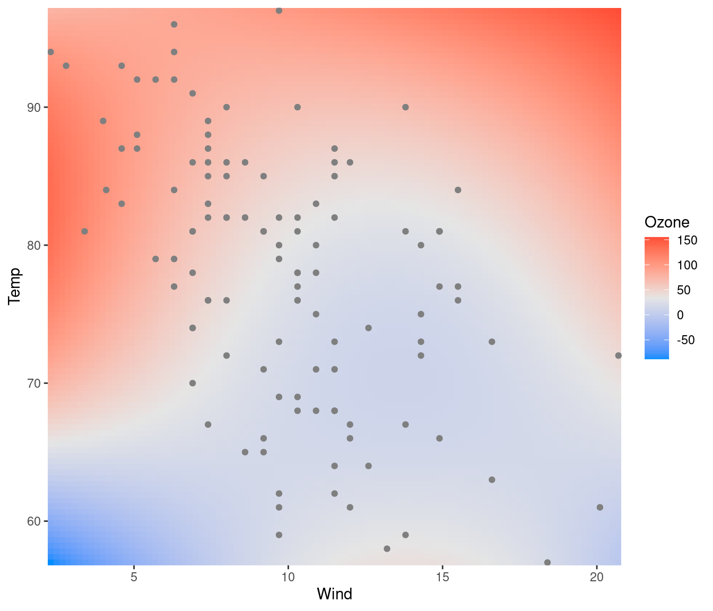
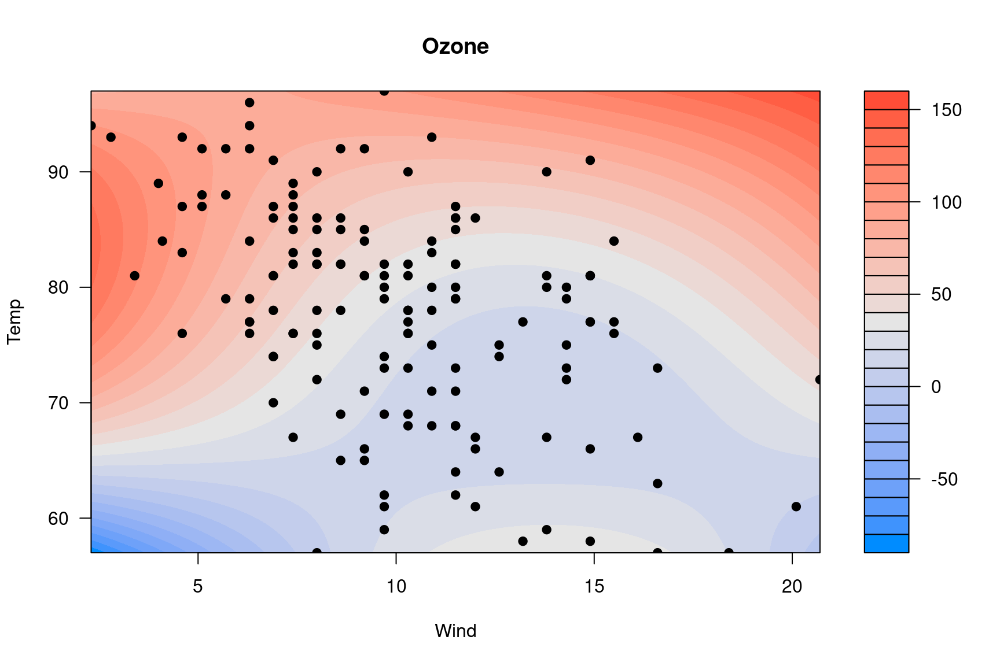
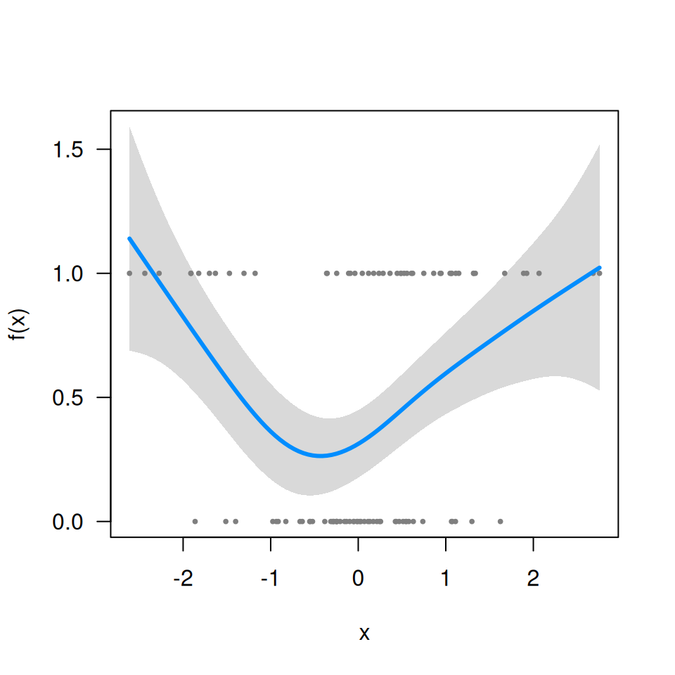
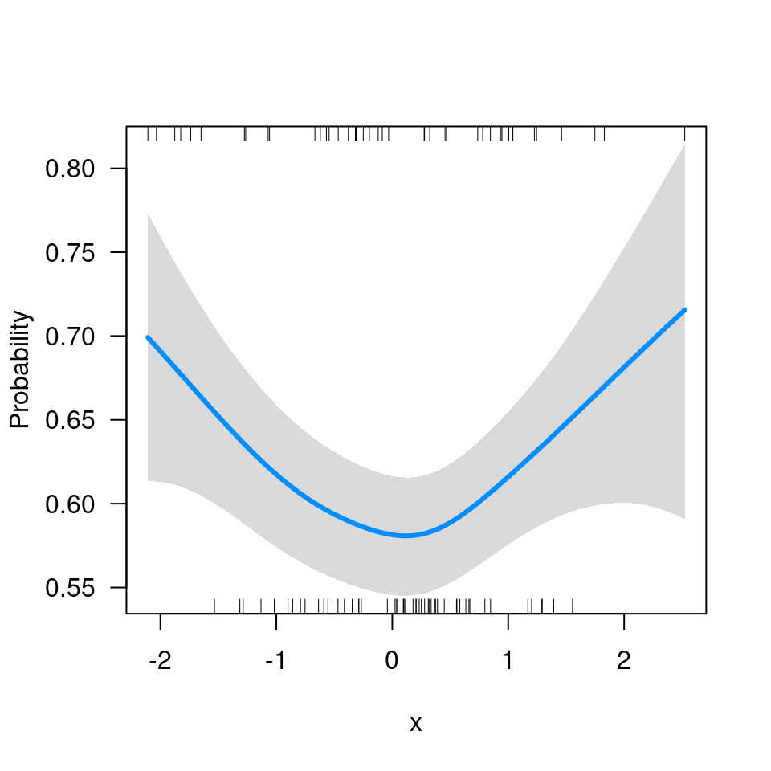
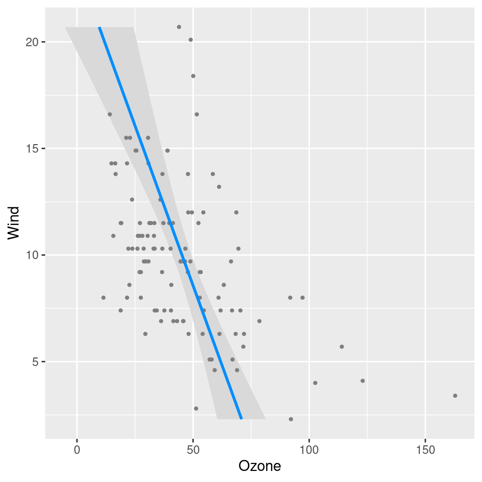

This page contains miscellaneous questions that I have been asked about visreg, with answers posted here so that others can read them too.
Q: In visreg2d, is it possible to superimpose data points onto the plot?
Yes; it’s probably easiest to do this using ggplot2 to render the surface:
fit <- lm(Ozone ~ Solar.R + Wind + Temp + I(Wind^2) + I(Temp^2) + I(Wind*Temp)+I(Wind*Temp^2) +
I(Temp*Wind^2) + I(Temp^2*Wind^2), data=airquality)
visreg2d(fit, x="Wind", y="Temp", plot.type="gg") +
geom_point(aes(Wind, Temp), data=subset(airquality, !is.na(Ozone)), col='gray50')
You can do it with base R graphics too, but it’s kind of complicated because of how filled.contour() works and the way in which it actually creates two plots, one main plot and one plot for the legend:
p <- quote({
axis(1, at = mx, labels = lx)
axis(2, at = my, labels = ly)
with(airquality, points(Wind, Temp, pch=19))
})
visreg2d(fit, x="Wind", y="Temp", plot.type="image", plot.axes=p)
Doing this through the axes is admittedly very weird – it’s not my idea; see ?filled.contour.
Q: Does visreg work with gamm (mgcv) or gamm4 objects?
Yes, although it takes a minor workaround since these objects have an unusual structure. First, let’s simulate some data and fit a model (I’m just using a tibble here for convenience, it isn’t relevant to the question):
library(mgcv)
library(tibble)
n <- 20
Data <- tibble(
ID = factor(rep(LETTERS[1:n], each=5)),
x = rnorm(n*5),
lp = rnorm(n)[as.numeric(ID)] + x^2 - 1,
p = binomial()$linkinv(lp),
y = rbinom(n*5, 1, p)
)
fit <- gamm(y~s(x), data=Data, dist='binomial', random=list(ID=~1))Now, fit$gam does not include the call (i.e., fit$gam$call is NULL), which means visreg won’t be able to find the data:
visreg(fit$gam, 'x')
# Error in FUN(X[[i]], ...): object 'y' not foundSo you have to include it manually:
fit$gam$data <- Data
visreg(fit$gam, 'x')
Q: I’m getting the following error message: Error in UseMethod("family") : no applicable method for 'family' applied to an object of class XXXX.
When you specify scale='response', you’re telling visreg to automatically find the transformation mapping the linear predictor to the scale of the response. It can only do that if the fitted model object provides that transformation through the family() method. Many R models (e.g., glm) do this, but some (e.g., the glmmADMB package, gamm from the mgcv package) don’t. If you’re working with one of these models, you’ll have to supply that transformation yourself. For example, with the model from the previous question, this code fails:
visreg(fit$gam, 'x', scale='response')
# Error in UseMethod("family"): no applicable method for 'family' applied to an object of class "gam"Since this is a binomial model with a logistic link, binomial()$linkinv provides the inverse transformation:

Q: Can I have the response variable on the horizontal axis instead of the vertical axis?
You can achieve this via ggplot2::coord_flip:
fit <- lm(Ozone ~ Solar.R + Wind + Temp, data=airquality)
visreg(fit, "Wind", gg=TRUE) + coord_flip()